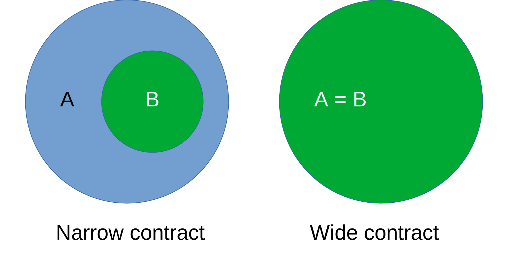

Demystifying Lakos Rule via Visualization and How It Could Relate to Constexpr¶
If you have been interested in C++ standard committee works, you have probably come contact with Lakos rule (named after John Lakos). It is a C++ function API design principle related to noexcept, which is especially relevant in C++ standard library. With language support for contracts on its way hopefully in C++26, the Lakos rule has proven its relevance once again. For more info on contracts and Lakos rule see papers P2831 and P2861 .
Lakos rule has been explained in numerous papers and conference talks (see references of the above two papers or consult your favorite search engine). However the explanations that I have come across focus on practical examples and how Lakos rule comes into play. This might be a preferable explanation format for many people but in this blog post I will try to argue for Lakos rule in more abstract and visual way. In the end, I will attempt to argue how arguments presented in this blog post for Lakos rule, applies for constexpr as well. As a disclaimer things on this post are how I have interpreted them as a C++ enthusiast. They might be incorrect or partial truths. I’m always happy to hear if you think that I’m wrong.
Lakos rule¶
In essence Lakos rule is with some caveats:
Narrow contracts and noexcept are inherently incompatible.
To unpack this, first we need some definitions. First let’s assume that we have a function \(f\), which can take arguments from some set \(A\). We can represent set \(A\) as Venn diagram:
Now, when we talk about having contracts on the arguments of \(f\), it means that some elements in \(A\) are not valid inputs for \(f\), even if \(f\) can technically accept them. Passing them to \(f\) would result in some form of undefined behavior. Let’s call subset of \(A\) which are valid input to \(f\) a set \(B\) and color elements of \(B\) with green and assume that every other element of \(A\) is non-valid.
If \(A = B\) i.e. every element of \(A\) is valid input, it is said that \(f\) has wide contract. Conversely if \(A \not = B\), it is said that \(f\) has narrow contract.
Now let’s say that author of function \(f\) belives that it will never throw when called with elements from the valid subset \(B\) and thus sets \(f\) to be noexcpet. Calling \(f\) with elements not in \(B\) would lead to undefined behavior anyway. Let’s denote all the elements of \(A\) which would result in crash if exception is raised in \(f\) with hatch pattern. This might seem silly because every call of \(f\) with any element in \(A\) is a noexcept call, and the arguments do not change the noexcept-ness of \(f\). However, this is, in fact, the essence of why the Lakos rule is relevant.
Now, the author of \(f\) writes some tests for it. Each test takes an element from \(A\), calls \(f\) with it, and checks if the result is correct. We can denote these tested elements of \(A\) with crosses.
We notice that elements that are not in set \(B\) can not be tested, because it would lead to undefined behavior. However, the author of \(f\) wants to ensure that \(f\) is not called with elements outside of \(B\) and inserts assertion checks to detect elements that are not in \(B\). Since assertions are new code, they should also be tested, so they need to somehow signal the calling test when an assertion failure occurs.
Due to the noexcept “zone” extending beyond set \(B\), the signal can not be thrown as an exception. The decision on noexcept has already been made because noexcept effects all elements in \(A\). It can not be applied only to some subset of \(A\).
Ok, but what about removing the noexcept? In many cases, yes, this can be done, but we assume that in this case, it can not be taken away, because users of \(f\) already are relaying on noexcept nature of \(f\). Remember that Lakos rule is most relevant in C++ standard library which one of the main features is backwards compatibility.
It’s worth noting that the wide contract case does not have this problem because there is no preconditions to assert. Though, of course, if the author of \(f\) wants to assert some internal invariant, the same problem comes up.
While there are some alternatives (such as setjmp/longjmp, child threads, “stackful coroutines” and most importantly death testing), none of them are as viable as exceptions, but the “bluntness” of noexcept made this form of contract checking impossible. For a comparison between different testing methods and why exceptions are superior, see Pablo Halpern’s and Timur Doumler’s excellent talk at CppCon 2023.
If we go back a little, there is another reason why noexcept is too much of a “blunt” tool for functions with a narrow contract. Let’s say once again that the author of \(f\) has chosen to make it noexcept.
Now, time goes by, and the author gets a nice idea on how to make \(f\) more generic. It can now handle a subset \(C\) of \(A\), which is a superset of \(B\). For a wide contract, this is impossible because \(B\) cannot be made any larger than \(A\).
Once again, because the choice of noexcept has already been made, all new possible arguments in \(C\) are automatically noexcept. This limits the design and possible functionality that \(f\) can achieve with the new elements from \(C\). This argument can even be made without the new set \(C\). The author of \(f\) cannot make any enhancements to implementation of \(f\) that would involve exceptions.
Summary¶
Now getting back to Lakos rule, narrow contracts and noexcept are inherently incompatible, because narrow contract means that there is some arguments (in \(A\) but not in \(B\)) for which the functionality has not been decided, but noexcept limits functionality of all possible arguments. Noexcept can not be applied only to subset of \(A\). In case of wide contracts the functionality of \(f\) has been decided for all possible arguments (\(A = B\)), so there is no new arguments which design space would be limited with noexcept.
Caveats¶
The caveats to Lakos rule arise in the form of special cases. To get a crasp on the nature of these cases, here is a list of requirements that such case needs to fulfill, proposed by John Lakos himself in P2861:
The operation the function provides has an inherently narrow contract.
A primary use case would be lost if it had a throwing specification.
To disallow throwing in response to a contract violation is acceptable.
No better design alternative is available (or foreseeable).
I will not go in any more depth in this matter and leave more thorough explanataion to P2861. It is a paper which gives an excellent and comprehensive explanation of the Lakos rule.
Constexpr¶
I will end this blog post attempting to argue why arguments of Lakos rule have implications for constexpr as well. Lets call the set of possible “call times” a set \(T\), which contains only two elements: run time and compile time (constant-evaluation). Then lets define set of possible “call times” for function \(f\) a set \(T_f\).
For function \(f\) without constexpr or consteval specifier \(T_f = \{\text{run time}\}\). In some cases function \(f\) with constexpr specifier can not ever be executed during compile time, because it uses some non-constant-evaluatable functionality, and for these \(T_f = \{\text{run time}\}\) as well. I will not be exact what non-constant-evaluatable functionality is because it is changing from one version of the standard to next.
For functions \(f\) with constexpr specifier and which only uses constant-evaluatable functionality, \(T_f = \{\text{run time}, \text{compile time}\}\). Lastly for function \(f\) which has consteval specifier, \(T_f = \{\text{compile time}\}\). [1]
The argument presented in this blog post for Lakos rule was that noexcept should not be applied to functions with narrow contracts because it limits the potential functionality for all arguments, even for those for which the functionality has yet not been decided. Now, with a similar argument, one can argue that constexpr should be applied to every function and only constant-evaluatable functionality should be used in them, for these functions \(T_f = T\). This is the only way that does not impose any restrictions on potential functionality of the function.
I believe this is a valid argument, albeit weaker than Lakos rule. The significance of Lakos rule lies in the difficulty of removing noexcept once applied. However, for functions with \(T_f \not = T\), it is relatively easy to add constexpr or change consteval to constexpr. What is not easy to change is use of non-constant-evaluatable functionality which prevent constexpr functions to be executed during compile time. Additionally, there is also complications involving SFINAE, as it can be used to choose overload based on whether a function is constant-evaluatable, potentially altering the meaning of other code when adding constexpr. See this answer on Stack Overflow for an exapmle. Even the C++ standard prohibits implementers of standard library from adding constexpr where it is not explicitly required by the standard. See N3788 for more detail.
Of course, similar to Lakos rule, there are exceptions for constexpr. If the functionality of a function inherently belongs to constant-evaluation (e.g., reflection functions proposed in P2996), it is more self-documenting code to specify those functions as consteval. Conversely, if the functionality of a function inherently belongs to runtime or is impossible to implement with only constant-evaluatable functions (e.g., I/O functions), it should not have a constexpr specifier. Also all constant-evaluatable functions have to be in a header. Increased compilation times can be a significant drawback and deal-breaker for many, but let’s hope that C++ modules will bring salvation.
This brings the end of this blog post. Thank you for reading this far! Feedback is always appreciated.